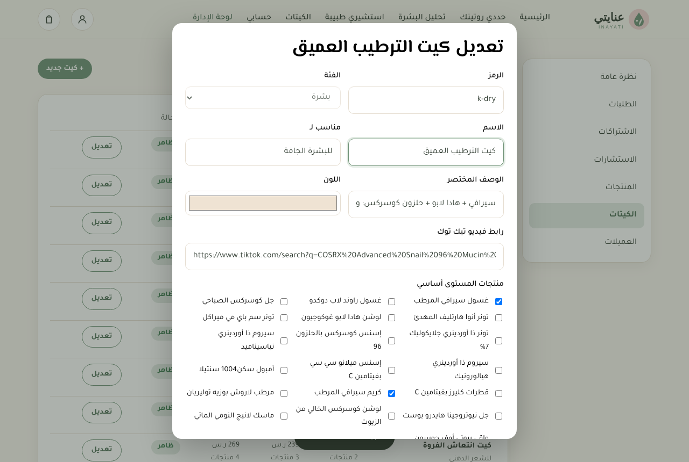
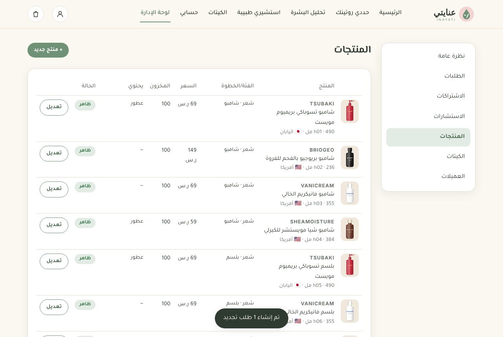

كيتات عناية شخصية جاهزة، مبنية على احتياج كل عميلة
مقرر IT473 — أنظمة التجارة الإلكترونية
عضوات الفريق
ريناد — الهوية والمحتوى وواجهات الموقع
ريفال — المتجر وقاعدة البيانات
رنيم — الشخصنة والاشتراك الشهري
إشراف: ............................ الفصل الدراسي الأول 2026
المحتويات
الملخص التنفيذي
خطة العمل: الاسم والهوية البصرية
نموذج العمل (Business Model Canvas)
القيمة المقدمة والعملاء المستهدفون
تحليل المنافسين
نموذج الإيراد
الأنشطة والموارد والشركاء الرئيسيون
المحتوى: أنواع البشرة والشعر والكيتات والأسعار
الاختبار وقواعد التوصية
عملية التصميم وتبرير الواجهة
التنفيذ التقني للمنصة (MVP)
تقنية التوصية والاشتراك الشهري
الاختبار وضمان الجودة
توزيع العمل بين الفريق
القيود والتطوير المستقبلي والخاتمة
1. الملخص التنفيذي
تواجه كثير من العميلات حيرة حقيقية أمام مئات منتجات العناية بالبشرة والشعر: أسماء مكونات علمية، نصائح متضاربة في وسائل التواصل، ومنتجات تُشترى ثم لا تُستخدم لأنها لا تناسب نوع البشرة أو تسبب تحسساً. النتيجة هدر في المال والوقت، وروتين غير منتظم.
عنايتي (Inayati) منصة تجارة إلكترونية تحل هذه المشكلة بأسلوب بسيط: تجيب العميلة على ستة أسئلة قصيرة (مجال العناية، نوع البشرة، المشكلة الأساسية، نوع الشعر، الحساسية، والميزانية)، فيختار محرك التوصية الكيت الأنسب لها من بين 12 كيتاً تتكون من 40 منتجاً حقيقياً من 29 براند عالمي (كوري، فرنسي، ياباني، أمريكي وكندي)، ويستبعد تلقائياً أي منتج يحتوي على مكوّن تتحسس منه ويستبدله ببديل آمن. تستلم العميلة كيت روتين يومي جاهزاً مع طريقة الاستخدام خطوة بخطوة، ولكل منتج زر يفتح ريفيوهاته الحقيقية على تيك توك، ويمكنها الاشتراك شهرياً ليتجدد الكيت تلقائياً، مع إمكانية إعادة الاختبار قبل كل تجديد ليتغير الكيت حسب احتياجها.
بنينا نموذجاً أولياً عاملاً (MVP) يتضمن: واجهة متجر عربية متجاوبة، اختبار تفاعلي، صفحات منتجات، سلة ودفع تجريبي، حسابات العميلات، تتبع الطلب، إدارة الاشتراك، ولوحة إدارة كاملة للمنتجات والكيتات والطلبات. وأضفنا خدمتين تكمّلان التخصيص: تحليل البشرة بالذكاء الاصطناعي من صورة الوجه (يصف نوع البشرة والمشاكل الظاهرة مثل الحبوب الهرمونية والفطرية ويقترح الكيت)، واستشارة طبيبة جلدية أونلاين (كتابية أو فيديو) للحالات اللي تحتاج تقييم طبي. ولكل منتج وصف «مناسب لـ» يوضح هل هو مناسب للحبوب الفطرية أو الهرمونية أو التصبغات. يعتمد نموذج الإيراد على هامش ربح الكيتات والاشتراك الشهري المتكرر ورسوم الاستشارات، إضافة إلى شراكات العلامات التجارية.
2. خطة العمل: الاسم والهوية البصرية
2.1 اسم المشروع
عنايتي كلمة عربية قصيرة سهلة النطق والتذكر، تجمع بين «العناية» وياء الملكية التي توحي بأن الروتين خاص بالعميلة نفسها وليس روتيناً عاماً، وهو جوهر فكرة التخصيص. الاسم اللاتيني Inayati يُستخدم في النطاق والحسابات الاجتماعية (@inayati.sa).
2.2 الشعار
يتكون الشعار من قطرة خضراء (رمز العناية والترطيب) بداخلها ورقة (المكونات اللطيفة والطبيعية)، داخل دائرة وردية هادئة (الأنوثة والراحة). صُمم الشعار بصيغة SVG متجهة ليظهر بوضوح في كل الأحجام: من أيقونة المتصفح إلى الملصق على علبة الكيت.
الشعار الرئيسي — توجد نسخة رمز منفصلة للأيقونات
2.3 الألوان
أخضر مريمية #6F9277 اللون الأساسي — الثقة والطبيعة
وردي هادئ #F2D4D2 العناية والأنوثة
كريمي #FBF7F1 الخلفية — النظافة والهدوء
أخضر داكن #2F3B30 النصوص — وضوح عالٍ
اخترنا الأخضر المريمي بدلاً من الوردي الصارخ الشائع في متاجر التجميل لأن منصتنا تقدم «نصيحة» قبل أن تقدم «منتجاً»، فنحتاج لون يوحي بالثقة والهدوء أقرب لعالم الصيدليات الراقية منه لعالم المكياج. نسبة التباين بين لون النص والخلفية أعلى من 4.5:1 لضمان سهولة القراءة.
2.4 الخطوط
الاستخدام
الخط
السبب
العناوين
El Messiri — المسيري
خط عربي أنيق بانحناءات ناعمة يعطي طابعاً أنثوياً راقياً
النصوص
Tajawal — تجوال
خط عربي حديث واضح على الشاشات الصغيرة ويدعم الأوزان المختلفة
2.5 نبرة الكتابة
نخاطب العميلة بلهجة سعودية بيضاء ودودة وبصيغة المؤنث («حددي روتينك»، «وش يضايقك في بشرتك؟») لأن الجمهور المستهدف نسائي بالدرجة الأولى، واللهجة القريبة تقلل رهبة المصطلحات العلمية وتشعرها أنها تتكلم مع صديقة خبيرة.
كثرة الخيارات: المتاجر تعرض مئات المنتجات بدون توجيه، فتشتري العميلة بناءً على إعلان لا على احتياجها.
المصطلحات العلمية: نياسيناميد، ساليسيليك، هيالورونيك… أغلب العميلات لا يعرفن أيها يناسبهن ولا كيف يرتبنها.
التحسس والهدر: منتج واحد يحتوي عطراً أو كحولاً قد يسبب تهيجاً فيُرمى.
الاستمرارية: ينتهي المنتج ولا تتذكر العميلة إعادة شرائه، أو تتغير بشرتها مع الفصول ولا تعرف ماذا تغيّر.
4.2 القيمة المقدمة
«روتينك، مصمَّم لكِ» — بدل أن تختاري من 100 منتج، تجاوبين على 6 أسئلة وتستلمين كيتاً متكاملاً آمناً لبشرتك، مع طريقة الاستخدام، ويتجدد كل شهر حسب احتياجك.
احتياج العميلة
كيف تلبيه عنايتي
«ما أعرف وش يناسبني»
اختبار من 6 أسئلة + قواعد توصية واضحة تشرح سبب الاختيار
«أخاف من الحساسية»
كل منتج موسوم بمكوناته الحساسة، والمحرك يستبدله تلقائياً
«ما أعرف الترتيب»
روتين صباحي ومسائي مكتوب + فيديو تيك توك لكل كيت
«ميزانيتي محدودة»
ثلاث مستويات (أساسي/متكامل/فاخر) والمحرك يلتزم بالميزانية
«أنسى أطلب»
اشتراك شهري بخصم 10% يمكن إيقافه أو تخطيه أو تغييره
«بشرتي تتغير»
إعادة الاختبار قبل التجديد وتحديث الكيت بضغطة
4.3 العملاء المستهدفون (Personas)
الشخصية
الوصف
ما تحتاجه من المنصة
سارة، 21، طالبة
بشرة دهنية وحبوب، ميزانية محدودة، تتابع تيك توك كثيراً
كيت صفاء الأساسي، سعر مناسب، فيديوهات قصيرة
نورة، 29، موظفة
وقتها ضيق، تريد روتيناً سريعاً يصلها بدون تفكير
اشتراك شهري، توصيل سريع، روتين واضح
هيا، 34، أم
بشرة حساسة تتهيج من العطور، جربت منتجات كثيرة ورمتها
كيت التهدئة، استبعاد العطور، ثقة في المكونات
5. تحليل المنافسين
قسمنا المنافسين إلى ثلاث فئات: الصيدليات ومتاجر التجميل الكبرى، المتاجر الإلكترونية للتجميل، والعلامات العالمية للعناية المخصصة.
المنافس
نقاط القوة
نقاط الضعف (فرصتنا)
الصيدليات الكبرى (النهدي، الدواء)
انتشار واسع، ثقة عالية، توصيل سريع
تشكيلة ضخمة بدون توجيه شخصي إلكترونياً، لا توجد كيتات روتين جاهزة حسب الاحتياج
متاجر التجميل (سيفورا، فيسز)
علامات عالمية، مستشارات في الفروع
التركيز على المكياج والعلامات الفاخرة، الاستشارة غالباً في الفرع فقط
العناية المخصصة عالمياً (مثل Curology و Function of Beauty)
أثبتت نجاح نموذج التخصيص والاشتراك
غير متوفرة أو مكلفة الشحن في السعودية، لا تدعم العربية
البائعات عبر انستقرام وواتساب
قرب من العميلة ومحتوى شخصي
بدون ضمان للمنتج أو نظام طلب وتتبع واضح
الميزة التنافسية لعنايتي: نجمع بين التخصيص (مثل المنصات العالمية) والمنتجات المتوفرة محلياً واللغة العربية واللهجة القريبة والاشتراك المرن، في تجربة واحدة تبدأ من سؤال «وش يناسبني؟» وتنتهي بكيت عند الباب.
5.1 تحليل SWOT
نقاط القوة
نقاط الضعف
فكرة واضحة تحل مشكلة حقيقية · تجربة عربية بالكامل · إيراد متكرر من الاشتراكات · استبعاد الحساسية تلقائياً
علامة جديدة بدون ثقة مسبقة · الاعتماد على الموردين · قواعد التوصية مبسطة ولا تغني عن الطبيب
الفرص
التهديدات
نمو التجارة الإلكترونية في المملكة ضمن رؤية 2030 · انتشار محتوى العناية على تيك توك · الطلب على العلامات السعودية الناشئة
دخول المتاجر الكبرى لنفس الفكرة · المنافسة السعرية · تغير لوائح منتجات التجميل
6. نموذج الإيراد
6.1 مصادر الإيراد
بيع الكيتات (مرة واحدة): نشتري منتجات البراندات العالمية من الموزعين المعتمدين بسعر الجملة ونبيعها ضمن كيت بخصم 15% عن مجموع أسعار التجزئة. الربح هو الفرق بين سعر الكيت وتكلفة المنتجات والتغليف.
الاشتراك الشهري: نفس الكيت بخصم إضافي 10% يتجدد تلقائياً. هامشه أقل قليلاً لكنه إيراد متكرر متوقع (MRR) يسهّل تخطيط المخزون ويرفع القيمة الدائمة للعميلة.
شراكات العلامات التجارية: رسوم من العلامات (خاصة السعودية الناشئة) مقابل إدراج منتجاتها في كيت أو إضافة عينات تجريبية تصل لشريحة مستهدفة بدقة.
رسوم الاستشارات: استشارة كتابية 79 ر.س أو فيديو 149 ر.س مع طبيبة جلدية؛ المنصة تأخذ عمولة 30% (≈ 24–45 ر.س لكل استشارة) والباقي للطبيبة. والأهم أن الاستشارة تقود لطلب كيت تقترحه الطبيبة.
مستقبلاً: كيتات هدايا موسمية، وباقات اشتراك تشمل استشارة كل 3 أشهر.
6.2 التسعير
سعر الكيت = مجموع أسعار منتجاته × (1 − 15%)، مقرّباً لأقرب رقم ينتهي بـ 9 (تسعير نفسي). سعر الاشتراك = سعر الكيت × (1 − 10%). الشحن مجاني للطلبات من 200 ر.س فأكثر، وإلا 25 ر.س. الأسعار تُحسب آلياً في المنصة من أسعار المنتجات، فأي تعديل على سعر منتج في لوحة الإدارة ينعكس فوراً على كل الكيتات.
الكيت (متكامل)
مجموع المنتجات
سعر الكيت
الاشتراك الشهري
كيت الترطيب العميق
397 ر.س
339 ر.س
309 ر.س
كيت صفاء (حبوب)
319 ر.س
269 ر.س
239 ر.س
كيت تعريف الكيرلي
197 ر.س
169 ر.س
149 ر.س
6.3 اقتصاديات الوحدة (مثال توضيحي)
الأرقام التالية افتراضات تقديرية لأغراض التخطيط وليست بيانات فعلية.
البند (كيت صفاء المتكامل — شراء مرة)
القيمة
سعر البيع
269 ر.س
تكلفة المنتجات (بافتراض سعر الجملة من الموزع ≈ 60% من سعر التجزئة 319)
≈ 191 ر.س
التغليف + كرت الروتين
≈ 8 ر.س
رسوم الدفع (≈ 2.5%)
≈ 7 ر.س
الشحن (مجاني للعميلة، تكلفة علينا)
≈ 20 ر.س
هامش الربح الإجمالي
≈ 43 ر.س (≈ 16%)
الهامش على البراندات العالمية أقل من العلامات الخاصة، لذلك نعوّضه بثلاث طرق: شراء كميات أكبر من الموزع مع نمو الاشتراكات (خصم جملة أعلى)، ورسوم الشراكات مع البراندات الناشئة، وإضافة كيتات بعلامة عنايتي الخاصة مستقبلاً. ومع الاشتراك ينخفض الهامش لكل طلب، لكن تكلفة اكتساب العميلة تُدفع مرة واحدة وتتوزع على عدة أشهر. لو استمرت المشتركة 5 أشهر في المتوسط فإن قيمتها الدائمة (LTV) تعادل عدة أضعاف عميلة الشراء الواحد، ولهذا تعرض المنصة الاشتراك كخيار افتراضي في صفحة المنتج.
6.4 مؤشرات الأداء التي تعرضها لوحة الإدارة
إجمالي المبيعات وعدد الطلبات والعميلات.
عدد الاشتراكات الفعالة والإيراد الشهري المتكرر (MRR).
عدد الاختبارات المكتملة (لقياس التحويل من الاختبار إلى الشراء).
الكيتات الأكثر مبيعاً (لتخطيط المخزون).
7. الأنشطة والموارد والشركاء الرئيسيون
7.1 الأنشطة الرئيسية
اختيار المنتجات←تصميم الكيتات والقواعد←استقبال الطلب والدفع←التجهيز والتغليف←الشحن والتتبع←التجديد الشهري
تنسيق المنتجات: اختيار منتجات بمكونات فعالة معروفة، وتوثيق مكونات الحساسية لكل منتج.
تطوير المنصة: تحديث الاختبار والقواعد بناءً على بيانات الاستخدام.
العمليات: تجهيز الطلبات وتحديث حالاتها (تم الدفع ← قيد التجهيز ← تم الشحن ← تم التوصيل).
التسويق بالمحتوى: فيديو قصير لكل كيت على تيك توك يشرح الروتين، وهو نفسه الرابط في صفحة المنتج.
7.2 الموارد الرئيسية
المنصة الإلكترونية ومحرك التوصية (أصل تقني).
قاعدة بيانات المنتجات ومكوناتها (أصل معرفي).
العلاقات مع الموردين وشركة الشحن.
الهوية البصرية والمحتوى ومتابعو تيك توك.
7.3 الشركاء الرئيسيون
الشريك
دوره
ما يحصل عليه
الموردون والموزعون المعتمدون
توفير منتجات أصلية بسعر الجملة
قناة بيع إضافية بطلب منتظم
العلامات السعودية الناشئة
منتجات محلية وعينات
وصول لعميلات مستهدفات بدقة
طبيبات جلدية متعاونات
الاستشارات الأونلاين ومراجعة قواعد التوصية
70% من رسوم الاستشارة + عميلات جدد
Anthropic (نموذج Claude)
تحليل صور البشرة بالذكاء الاصطناعي عبر API
رسوم استخدام حسب عدد التحليلات
بوابة الدفع
معالجة مدى وفيزا وApple Pay والدفع المتكرر
نسبة من كل عملية
شركة الشحن
التوصيل ورقم التتبع
رسوم الشحن
صانعات المحتوى
فيديوهات الروتين والتسويق
عمولة على المبيعات عبر كود خاص
8. المحتوى: أنواع البشرة والشعر والكيتات والأسعار
8.1 أنواع البشرة واحتياجاتها
النوع
كيف تعرفينها
ما تحتاجه
الكيت
جافة
شد بعد الغسيل وقشور
هيالورونيك + سيراميد
الترطيب العميق
دهنية
لمعان كامل ومسام واضحة
ساليسيليك + نياسيناميد + ترطيب خفيف
التوازن والنقاء
مختلطة
لمعان في منطقة T فقط
توازن بين الترطيب والتنظيم
التوازن الذكي
عادية
مريحة ومتوازنة
روتين محافظة أساسي
الأساسيات
حساسة
احمرار وتهيج بسهولة
سنتيلا، بدون عطور، واقٍ معدني
التهدئة
8.2 مشاكل البشرة
المشكلة
الحل
الكيت
حبوب ورؤوس سوداء
ساليسيليك + نياسيناميد وزنك + علاج موضعي
صفاء
تصبغات وبهتان
فيتامين C صباحاً + AHA + واقي شمس
الإشراقة
جفاف وخشونة
هيالورونيك + سيراميد
الترطيب العميق / التوازن الذكي
مسام ولمعان
نياسيناميد 10% + جل خفيف
التوازن والنقاء / التوازن الذكي
8.3 كتالوج المنتجات (40 منتجاً من 29 براند)
اخترنا منتجات حقيقية من براندات عالمية معروفة تبيعها متاجر مثل سيفورا، من كوريا وفرنسا واليابان وأمريكا وكندا، وأغلبها مشهور بريفيوهات حقيقية على تيك توك. لكل منتج في الموقع زر «ريفيوهات تيك توك» يفتح نتائج البحث عن ريفيوهات هذا المنتج بالضبط.
الرمز
البراند
المنتج
البلد
الخطوة
السعر
يحتوي
s01
CeraVe
غسول سيرافي المرطب Hydrating Facial Cleanser · 236 مل
أمريكا
غسول
65
—
s03
ROUND LAB
غسول راوند لاب دوكدو 1025 Dokdo Cleanser · 150 مل
كوريا
غسول
65
—
s04
COSRX
جل كوسركس الصباحي Low pH Good Morning Gel Cleanser · 150 مل
كوريا
غسول
55
—
s27
BIODERMA
ماء ميسيلار بيوديرما سينسيبيو Sensibio H2O Micellar Water · 250 مل
بخاخ تريسيمي للحماية من الحرارة Keratin Smooth Heat Protection Spray · 200 مل
أمريكا
حماية حرارية
39
—
الأسعار تقريبية بالريال لأغراض المشروع. معلومات المكونات الحساسة تقريبية للعرض، والمرجع النهائي هو قائمة المكونات على العبوة؛ وعند الإطلاق تُراجع مع الموزع.
8.4 الكيتات والأسعار
الكيت
لمن
أبرز البراندات
أساسي
متكامل
فاخر
الترطيب العميق
البشرة الجافة
CeraVe, HADA LABO, COSRX, BEAUTY OF JOSEON
199
339
439
التوازن والنقاء
البشرة الدهنية
COSRX, ANUA, THE ORDINARY, BIORÉ
159
279
429
التوازن الذكي
البشرة المختلطة
ROUND LAB, ANUA, THE ORDINARY, COSRX, BEAUTY OF JOSEON
189
309
349
الأساسيات
البشرة العادية
ROUND LAB, HADA LABO, COSRX, LA ROCHE-POSAY, BEAUTY OF JOSEON
199
339
419
التهدئة
البشرة الحساسة
BIODERMA, ANUA, SKIN1004, LA ROCHE-POSAY, BEAUTY OF JOSEON
209
359
399
صفاء
البشرة المعرضة للحبوب
COSRX, THE ORDINARY, MARIO BADESCU, BIORÉ
139
269
329
الإشراقة
التصبغات والبهتان
ROUND LAB, MELANO CC, THE ORDINARY, COSRX, BEAUTY OF JOSEON
179
279
329
ترطيب الشعر
الشعر الجاف
TSUBAKI, MISE EN SCÈNE
119
159
209
انتعاش الفروة
الشعر الدهني
BRIOGEO, VANICREAM, MIELLE
189
239
269
تعريف الكيرلي
الشعر المجعد
SHEAMOISTURE, TSUBAKI
109
169
279
الإصلاح
الشعر المصبوغ والتالف
TSUBAKI, OLAPLEX, TRESEMMÉ
109
259
429
الشعر الأساسي
الشعر العادي
TSUBAKI, THE ORDINARY
119
149
179
الأسعار بالريال السعودي شاملة الضريبة، لشراء مرة واحدة. الاشتراك الشهري أقل بـ 10%.
8.5 وصف «مناسب لـ» لكل منتج
لكل منتج في صفحة الكيت سطر «مناسب لـ» (مثل: الحبوب العادية، الحبوب الهرمونية، آثار الحبوب، التصبغات، الجفاف، المسام، الاحمرار)، وسطر خاص بـالحبوب الفطرية بثلاث حالات:
الحالة
المعنى
أمثلة
✓ مناسب غالباً
بدون زيوت أو استرات معروفة بأنها تغذي فطريات Malassezia
COSRX Good Morning, The Ordinary Niacinamide, Hada Labo, Mario Badescu (بالكبريت)
✗ غير مناسب
فيه مكونات ممكن تغذي الفطريات (زيوت، استرات، سيراميد بقاعدة دهنية)
ما نقدر نجزم من المكونات المتاحة؛ نوجه العميلة للطبيبة
Beauty of Joseon, La Roche-Posay Toleriane
الحبوب الهرمونية تُعرض كـ«عناية مساندة» فقط، لأن علاجها الأساسي طبي. هذه التصنيفات تقريبية مبنية على المكونات المعروفة وتُراجع مع الطبيبة المتعاونة قبل الإطلاق، والإدارة تعدلها من لوحة التحكم.
1. غسول سيرافي 2. لوشن هادا لابو 3. إسنس الحلزون 4. طبقة أسمك من كريم سيرافي، أو ماسك لانيج النومي (الفاخر)
9. الاختبار وقواعد التوصية
9.1 أسئلة الاختبار
صممنا الأسئلة لتكون وصفية لا علمية: بدلاً من «ما نوع بشرتك؟» (سؤال لا تعرف كثير من العميلات إجابته)، نسأل «كيف تحسين بشرتك بعد ساعتين من غسلها؟». الأسئلة تظهر بشكل شرطي، فلو اختارت «شعري» فقط لا تظهر أسئلة البشرة.
#
السؤال
الخيارات
يظهر متى
1
وش تبين نهتم فيه؟
بشرتي / شعري / الاثنين
دائماً
2
كيف تحسين بشرتك بعد ساعتين من غسلها؟
مشدودة وجافة (جافة) / لامعة بالكامل (دهنية) / لامعة في الجبهة والأنف (مختلطة) / مريحة (عادية) / تحمر بسهولة (حساسة)
بشرة أو الاثنين
3
وش أكثر شي يضايقك في بشرتك؟
حبوب / حبوب هرمونية / حبوب فطرية / تصبغات / جفاف / مسام ولمعان / لا شيء
بشرة أو الاثنين
4
كيف تصفين شعرك؟
جاف / دهني / مجعد / مصبوغ أو تالف / عادي
شعر أو الاثنين
5
عندك حساسية من أي مكون؟ (متعدد)
العطور / الكحول / زيوت المكسرات / لا يوجد
دائماً
6
كم ميزانيتك الشهرية؟
حتى 250 / 250–400 / أكثر من 400
دائماً
9.2 قواعد التوصية
القاعدة
الشرط
النتيجة
1
البشرة حساسة
كيت التهدئة دائماً (الأولوية للأمان قبل العلاج) + إضافة العطور لقائمة الاستبعاد تلقائياً
2
المشكلة = حبوب
كيت صفاء
3
المشكلة = تصبغات
كيت الإشراقة
4
المشكلة = جفاف
دهنية/مختلطة ← التوازن الذكي، غير ذلك ← الترطيب العميق
5
المشكلة = مسام
جافة ← التوازن الذكي، غير ذلك ← التوازن والنقاء
6
لا مشكلة محددة
حسب النوع: جافة/دهنية/مختلطة/عادية ← الكيت المقابل
7
الشعر
كل نوع شعر ← كيته مباشرة
8
الميزانية
حتى 250 ← أساسي، 250–400 ← متكامل، أكثر ← فاخر. إذا تجاوز المجموع الميزانية يُخفَّض مستوى كيت الشعر أولاً ثم البشرة
كيت صفاء مع استبعاد أي منتج مصنف «غير مناسب للحبوب الفطرية» واستبداله ببديل من نفس الخطوة + نصيحة باستشارة الطبيبة لتأكيد التشخيص
9
الحساسية
أي منتج يحتوي مكوناً محظوراً يُستبدل بمنتج من نفس الخطوة يناسب نوعها وخالٍ من المكون؛ وإن لم يوجد بديل يُحذف ونخبر العميلة بذلك
مثال: بشرة دهنية + حبوب + حساسية من الكحول + ميزانية 250–400 ← كيت صفاء (متكامل). المحرك استبدل لوشن ماريو باديسكو (فيه كحول) بكريم La Roche-Posay Effaclar Duo+ من نفس الخطوة (علاج)، واستبدل واقي بيوريه (فيه كحول) بواقي Beauty of Joseon. السعر النهائي 299 ر.س ضمن الميزانية، وتظهر للعميلة جملة تشرح سبب كل استبدال.
جعلنا القواعد شفافة وقابلة للتفسير بدلاً من نموذج تعلّم آلي، لأن الثقة في منتجات العناية تتطلب أن تفهم العميلة لماذا اخترنا لها هذا الكيت، ولأن القواعد يمكن مراجعتها من استشارية جلدية بسهولة.
بدأنا من رحلة العميلة لا من قائمة الصفحات: محتارة ← تجاوب الاختبار ← تفهم النتيجة وسببها ← تتأكد من المحتوى وطريقة الاستخدام ← تشتري ← تتابع طلبها ← تحدّث احتياجها شهرياً. كل صفحة في الموقع تخدم خطوة من هذه الرحلة.
10.2 خريطة الموقع
الصفحة
الهدف
الرئيسية
شرح الفكرة في ثوانٍ ودفع العميلة للاختبار
حددي روتينك (الاختبار)
جمع الاحتياج وعرض الكيت المقترح مع السبب
الكيتات
تصفح كل الكيتات مع فلترة بشرة/شعر
صفحة المنتج (الكيت)
المستويات، الاشتراك، المحتوى، طريقة الاستخدام، زر تيك توك
السلة والدفع
مراجعة الطلب، بيانات التوصيل، الدفع
تتبع الطلب
مراحل الطلب وسجل الحالة
حسابي
الطلبات، الاشتراك، نتائج الاختبار، البيانات
تحليل البشرة
رفع صورة الوجه ← وصف البشرة والمشاكل بالذكاء الاصطناعي ← الكيت المقترح ← اقتراح استشارة عند الحاجة
استشيري طبيبة
اختيار الطبيبة ونوع الاستشارة والموعد ثم الدفع؛ وتظهر توصية الطبيبة في الحساب
user_id, doctor_id, type (chat/video), date, time, concern, notes, analysis (JSON), price, payment_ref, status, doctor_note, recommended_kit
users 1 ← n؛ فهرس فريد يمنع حجز نفس الموعد مرتين
subscriptions
user_id, kit_id, tier, product_ids, price, status (active/paused/cancelled), next_renewal, origin_order_id
users 1 ← n، kits
نحفظ سعر الوحدة واسم الكيت داخل order_items وقت الشراء، حتى لا يتغير سجل الطلبات القديمة إذا عدّلت الإدارة سعر منتج لاحقاً. وتُطبّق قيود CHECK والمفاتيح الأجنبية لضمان سلامة البيانات.
11.3 واجهة البرمجة (API)
المسار
الوظيفة
GET /api/catalog
المنتجات والكيتات الفعالة
POST /api/auth/register | login | logout
إنشاء حساب، دخول، خروج
GET/PATCH /api/auth/me
بيانات العميلة الحالية وتعديلها
POST /api/recommend
تشغيل محرك التوصية وحفظ النتيجة
POST /api/cart/quote
حساب أسعار السلة من الخادم
POST /api/orders
إنشاء طلب + الدفع التجريبي + إنشاء الاشتراكات
GET /api/orders, /api/orders/:id
سجل الطلبات وتفاصيل التتبع
POST /api/orders/:id/cancel
إلغاء طلب قبل التجهيز
GET/PATCH /api/subscriptions
عرض الاشتراك، إيقاف، استئناف، تخطي، إلغاء، تحديث الكيت
POST /api/analyze
تحليل صورة البشرة بالذكاء الاصطناعي وإرجاع التوصية
تُحفظ السلة في المتصفح (localStorage) لتبقى حتى قبل تسجيل الدخول، لكن الخادم يعيد حساب كل الأسعار عند الطلب باستخدام نفس ملف engine.js، فلا يمكن التلاعب بالسعر من المتصفح.
بوابة الدفع تجريبية: تتحقق من رقم البطاقة بخوارزمية Luhn وتاريخ الانتهاء ورمز CVV، وتنشئ رقم عملية. البطاقة 4242 4242 4242 4242 تنجح، و4000 0000 0000 0002 تُرفض لعرض حالة الرفض.
الدفع عند الاستلام متاح للطلبات العادية فقط، لأن الاشتراك يحتاج بطاقة للتجديد التلقائي.
عملية إنشاء الطلب تتم داخل معاملة (Transaction): الطلب، العناصر، الاشتراكات، وسجل الأحداث تُحفظ معاً أو لا يُحفظ شيء.
عند الإطلاق الفعلي تُستبدل الدالة التجريبية ببوابة دفع حقيقية تدعم مدى وApple Pay والدفع المتكرر.
11.5 لوحة الإدارة
تتيح لوحة الإدارة (للحساب ذي الدور admin فقط، ويُتحقق من الدور في الخادم لكل طلب): متابعة المؤشرات، تحريك الطلب بين مراحله (كل تغيير يُسجل في order_events ويظهر للعميلة في صفحة التتبع)، إضافة وتعديل المنتجات ومكونات الحساسية والمخزون، بناء الكيتات باختيار منتجات كل مستوى وكتابة الروتين ورابط تيك توك، وعرض العميلات والاشتراكات وتشغيل التجديدات.

الشكل 17: تعديل كيت من لوحة الإدارة

الشكل 18: إدارة المنتجات
11.6 الأمان والخصوصية
صورة الوجه تُصغّر في المتصفح ثم تُرسل للتحليل فقط ولا تُحفظ في الخادم؛ نحفظ نتيجة التحليل النصية في حساب العميلة. والتحليل يحتاج موافقة صريحة قبل الإرسال.
مفتاح Anthropic API موجود في متغير بيئة على الخادم فقط، ولا يصل للمتصفح.
كلمات المرور مشفرة بـ bcrypt ولا تُخزن نصاً صريحاً.
كوكي الجلسة HttpOnly و SameSite=Lax، ويُعاد توليد الجلسة عند الدخول لمنع session fixation.
كل استعلامات قاعدة البيانات مُعدّة مسبقاً (Prepared Statements) لمنع حقن SQL.
كل نص يُعرض في الواجهة يمر بدالة تهريب (escape) لمنع XSS.
العميلة لا ترى إلا طلباتها واشتراكاتها؛ مسارات الإدارة محمية بالتحقق من الدور.
12. تقنية التوصية والاشتراك الشهري
12.1 محرك التوصية
المحرك ملف واحد (public/js/engine.js) بصيغة UMD يعمل في المتصفح والخادم. يستقبل إجابات الاختبار والكتالوج الحالي من قاعدة البيانات، ويطبق القواعد بالترتيب:
بناء قائمة المكونات المحظورة من إجابة الحساسية (وإضافة العطور تلقائياً للبشرة الحساسة).
اختيار كيت البشرة (pickSkinKit) وكيت الشعر (pickHairKit) مع جملة «لماذا».
تحديد المستوى من الميزانية، ثم حلقة تخفيض المستوى حتى يدخل المجموع ضمن الميزانية.
استبدال المنتجات المحظورة (applyAllergies) ببديل من نفس الخطوة والفئة يناسب نوعها، مع تسجيل كل استبدال.
حساب السعر النهائي لكل كيت بعد الاستبدال.
recommend({ focus:"skin", skinType:"oily", concern:"acne",
allergies:["alcohol"], budget:"mid" }, catalog)
→ { kits: [ { kitId:"k-acne", tier:"full",
productIds:[s04 COSRX, s10 The Ordinary, s18 COSRX, s23 La Roche-Posay, s20 Beauty of Joseon],
swaps:[ s24 Mario Badescu → s23 La Roche-Posay, s21 Bioré → s20 Beauty of Joseon ] } ],
total: 299, notes:["استبعدنا المنتجات اللي فيها: الكحول."] }
لأن المحرك يقرأ الكتالوج من قاعدة البيانات، فإن أي منتج جديد تضيفه الإدارة بخطوة ومكونات صحيحة يصبح تلقائياً بديلاً مرشحاً في الاستبدال، دون تعديل الكود. ونتائج الاختبار تُحفظ في حساب العميلة (وإذا اختبرت قبل التسجيل تُحفظ بعد التسجيل مباشرة).
12.2 الاشتراك الشهري
شراء بخيار «اشتراك»←إنشاء اشتراك (موعد التجديد بعد شهر)←قبل التجديد: «حدّثي احتياجك»←تجديد تلقائي = طلب جديد←تتبع الطلب
كل عنصر في السلة بنوع «اشتراك» ينشئ سجلاً في subscriptions بسعر الاشتراك ونفس المنتجات المخصصة.
تستطيع العميلة من حسابها: إيقاف مؤقت، استئناف، تخطي الشهر القادم، تغيير المستوى، إلغاء.
زر «حدّثي احتياجك لهذا الشهر» يعيد الاختبار ثم يطبّق النتيجة الجديدة على الاشتراك نفسه، وهذا ما يحقق فكرة «يتجدد حسب احتياجها».
دالة runRenewals تنشئ طلب تجديد (source = renewal) لكل اشتراك فعال حان موعده، وتخصم المبلغ من البطاقة المحفوظة (تجريبياً)، وتنقل الموعد شهراً. تعمل تلقائياً كل 6 ساعات أثناء تشغيل الخادم، ومن لوحة الإدارة يمكن «محاكاة مرور شهر» للعرض.
إلغاء الطلب الأول قبل تجهيزه يلغي الاشتراكات الناتجة عنه تلقائياً.
12.3 تحليل البشرة بالذكاء الاصطناعي
صورة الوجه + موافقة←تصغير الصورة في المتصفح←Claude يصف البشرة (JSON)←تحويل الوصف لإجابات الاختبار←نفس محرك التوصية←الكيت + نصيحة الاستشارة
الخادم يرسل الصورة لنموذج claude-opus-5-5 عبر مكتبة Anthropic الرسمية لـ Node.js، مع تعليمات ثابتة (ANALYSIS_PROMPT في engine.js) تطلب وصف البشرة فقط بدون تشخيص طبي، وترجع كائن JSON: نوع البشرة، المشكلة الأساسية، قائمة المشاكل مع درجة الاحتمال، ملاحظات، وهل تحتاج طبيبة.
دالة analysisToAnswers تحوّل النتيجة لإجابات الاختبار، وتمر على نفس قواعد التوصية؛ فالتحليل والاختبار يعطون نتائج متسقة وقابلة للتفسير.
فعّلنا النموذج الاحتياطي التلقائي (fallbacks) إذا رفض النموذج الطلب، ونتعامل مع أخطاء المفتاح والضغط برسائل واضحة. وإذا ما فيه مفتاح، الصفحة تقول إن التحليل غير مفعّل وتوجه للاختبار أو الاستشارة، بدون نتائج مزيفة.
في نسخة الرابط المنشورة يتم التحليل عبر قدرة «اسألي Claude» على حساب الزائرة بعد موافقتها، وبنفس التعليمات.
12.4 الاستشارات مع الطبيبات
العميلة تختار الطبيبة ونوع الاستشارة (كتابية خلال 24 ساعة، أو فيديو 20 دقيقة بموعد)، والمواعيد المحجوزة تختفي تلقائياً، وقاعدة البيانات تمنع حجز نفس الموعد مرتين.
الدفع بنفس بوابة الدفع التجريبية، ويمكن إرفاق نتيجة تحليل AI.
من لوحة الإدارة تكتب الطبيبة توصيتها وتختار كيتاً مقترحاً وتغيّر الحالة إلى «تمت»، فيظهر ذلك في «استشاراتي» مع رابط مباشر للكيت.
13. الاختبار وضمان الجودة
اختبرنا المنصة باختبار آلي شامل عبر متصفح حقيقي (Playwright + Chromium) يحاكي رحلة العميلة والإدارة كاملة:
كيت صفاء + كيت الكيرلي ضمن الميزانية وبدون منتجات فيها كحول
✔ نجح
زر ريفيوهات تيك توك لكل منتج
يفتح بحث تيك توك باسم المنتج بالضبط
✔ نجح
عرض صفحة المنتج بالمنتجات المخصصة
رسالة «مخصص لك» والمنتجات بعد الاستبدال
✔ نجح
إضافة اشتراك للسلة ثم التسجيل
بقاء السلة وحفظ نتيجة الاختبار في الحساب
✔ نجح
الدفع ببطاقة مرفوضة
رسالة رفض وعدم إنشاء طلب
✔ نجح
الدفع ببطاقة ناجحة
إنشاء طلب + اشتراك + صفحة تتبع
✔ نجح
تخطي شهر في الاشتراك
تأجيل موعد التجديد شهراً
✔ نجح
الإدارة: تغيير حالة الطلب
تحديث الحالة وظهورها في سجل التتبع
✔ نجح
الإدارة: تشغيل التجديدات
إنشاء طلب تجديد وتحديث MRR
✔ نجح
دخول عميلة لمسار إدارة
رفض (403)
✔ نجح
الاختبار: حبوب فطرية / هرمونية
كيت صفاء + بطاقة استشارة، واستبعاد المنتجات غير المناسبة للفطرية
✔ نجح
تحليل AI بدون مفتاح API
رسالة «غير مفعّل» وتوجيه للاختبار/الاستشارة
✔ نجح
تحليل AI بمفتاح غير صالح
الطلب يصل لـ Anthropic ويرجع رسالة «مفتاح غير صالح» بدون انهيار
✔ نجح
عرض نتيجة التحليل وربطها بحجز الاستشارة
النتيجة والكيت وبطاقة الاستشارة، وتعبئة وصف الحالة تلقائياً
✔ نجح (برد تجريبي في الاختبار)
حجز نفس موعد الفيديو مرتين
رفض (409) «هذا الموعد انحجز»
✔ نجح
توصية الطبيبة من لوحة الإدارة
تظهر في حساب العميلة مع الكيت المقترح
✔ نجح
كل الصفحات على عرض جوال 390px
بدون تمرير أفقي
✔ نجح
14. توزيع العمل بين الفريق
العضوة
المسؤوليات
أقسام التقرير
ريناد
الاسم والشعار والألوان والخطوط · أنواع البشرة والشعر والمشاكل · الروتينات والمنتجات والأسعار والأوصاف · أسئلة الاختبار وقواعد التوصية على الورق · وصف «مناسب لـ» لكل منتج · بناء صفحات الموقع: الرئيسية، الاختبار، تحليل البشرة، الاستشارة، الكيتات، صفحة المنتج مع زر تيك توك، السلة، الحساب
2، 4، 8، 9، 10
ريفال
إعداد GitHub وتصميم قاعدة البيانات · حسابات العميلات (تسجيل ودخول) · لوحة الإدارة وإدخال المنتجات والكيتات · ربط السلة والدفع التجريبي بالصفحات · نظام حجز الاستشارات وتوصية الطبيبة في لوحة الإدارة
11، 12.4
رنيم
بحث المنافسين · منطق اختبار «حددي روتينك» وربطه بالقواعد وإظهار الكيت · الاشتراك الشهري وتتبع الطلب وسجل الطلبات · تحليل البشرة بالذكاء الاصطناعي وربطه بالتوصية
5، 6، 7، 12
الفريق كاملاً
الربط النهائي · الاختبار · مراجعة التقرير وتصديره PDF · تدريب العرض
1، 3، 13، 15
الجدول الزمني
الفترة
العمل
الأسبوعان 1–2
ريناد: الهوية والمحتوى والواجهات · ريفال (بالتوازي): GitHub وقاعدة البيانات والحسابات · رنيم: بحث المنافسين وقسم الإيراد
الأسبوع 3
ريفال: لوحة الإدارة والسلة والدفع · رنيم: منطق الاختبار والتوصية
الأسبوع 4
رنيم: الاشتراك وتتبع الطلب · ريناد: تحسين الواجهات
الأسبوع 5
الجميع: الربط، الاختبار، التقرير، العرض
15. القيود والتطوير المستقبلي والخاتمة
15.1 قيود النموذج الأولي
الدفع تجريبي ولا يتصل ببوابة حقيقية.
تحليل AI وصف تقريبي من صورة واحدة وليس تشخيصاً طبياً، ويحتاج مفتاح Anthropic API ليعمل في النسخة الكاملة.
الطبيبات بأسماء توضيحية، ولا توجد مكالمة فيديو فعلية في النموذج الأولي.
تصنيف «مناسب للحبوب الفطرية» تقريبي من المكونات المعروفة ويحتاج مراجعة طبية.
صور المنتجات مرسومة برمجياً بشكل العبوة الحقيقية وألوانها، وتُستبدل بالصور الرسمية من الموزع عند الإطلاق (حقل الصورة جاهز في قاعدة البيانات).
الأسعار ومعلومات المكونات الحساسة تقريبية وتحتاج مراجعة مع الموزع.
زر تيك توك يفتح نتائج البحث عن ريفيوهات المنتج؛ ويمكن لاحقاً ربط فيديو محدد لكل منتج من لوحة الإدارة.
قواعد التوصية مبسطة وتحتاج مراجعة من مختصة، ولا تغني عن استشارة طبيبة الجلدية في الحالات المرضية.
لا يوجد إرسال بريد أو رسائل SMS فعلية للتنبيهات.
15.2 التطوير المستقبلي
ربط بوابة دفع حقيقية (مدى، Apple Pay، تمارا/تابي) مع حفظ البطاقة للتجديد.
تنبيه بالبريد/واتساب قبل التجديد بثلاثة أيام لتحديث الاحتياج.
متابعة بالصور: العميلة تحلل بشرتها كل شهر قبل التجديد ونعرض لها التحسن، مع تقييمها للكيت لتطوير القواعد.
كيتات موسمية (صيف/شتاء) وكيتات هدايا، وتوسيع الشراكات مع العلامات السعودية.
15.3 الخاتمة
قدمت عنايتي حلاً عملياً لمشكلة الحيرة في اختيار منتجات العناية، بتحويل مئات الخيارات إلى كيت واحد مناسب وآمن وواضح الاستخدام. جمع المشروع بين خطة عمل متكاملة بإيراد متكرر من الاشتراكات، وتصميم واجهة مبني على رحلة العميلة، ونموذج أولي عامل يغطي دورة التجارة الإلكترونية كاملة: من الاختبار والتوصية، إلى الدفع والتتبع، إلى التجديد الشهري وإدارة المتجر.